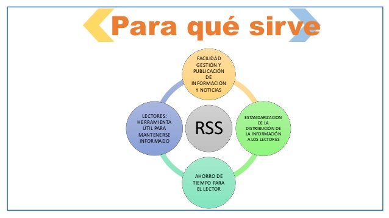

Really Simple Syndication (RSS)
¿Qué son los RSS?
Los RSS (Really Simple Syndication) son un formato de sindicación web que permite a los usuarios obtener y recibir actualizaciones de contenido de diversos sitios web en un único lugar.Los RSS funcionan mediante la creación de un archivo XML que contiene los títulos, resúmenes y enlaces a los artículos o entradas más recientes de un sitio web. Este archivo XML se conoce como feed RSS o canal RSS.
Tienen como objetivo
El objetivo principal de los RSS es permitir la distribución de contenido de manera sencilla y eficiente. Al proporcionar un feed RSS, los sitios web pueden difundir sus actualizaciones de contenido a los usuarios que se han suscrito, evitando la necesidad de que los usuarios visiten el sitio web para comprobar si hay nuevas publicaciones.

¿Por qué el uso de los RSS esta en decadencia?
- Cambio en los hábitos de consumo de contenido:Con el auge de las redes sociales y las aplicaciones de noticias, los usuarios han adoptado nuevas formas de descubrir y consumir contenido en línea. Muchos prefieren seguir a sus sitios web favoritos a través de las redes sociales, donde pueden ver las actualizaciones sin la necesidad de utilizar un lector de RSS.
- Notificaciones por correo electrónico y aplicaciones móviles: En lugar de confiar en los feeds RSS, muchos sitios web y plataformas han optado por enviar notificaciones por correo electrónico o notificaciones a través de aplicaciones móviles para informar a los usuarios sobre nuevas actualizaciones.
- Falta de soporte y adopción en ciertas plataformas: Algunas plataformas y servicios en línea han dejado de ofrecer soporte nativo para los feeds RSS. Esto ha llevado a una disminución en la adopción y el uso de RSS, ya que los usuarios no tienen una opción fácil y conveniente para consumir contenido a través de RSS en esas plataformas.
A pesar de esta disminución en su popularidad, los feeds RSS todavía se utilizan por algunos usuarios que prefieren una experiencia de lectura más personalizada y controlada. Además, hay lectores de RSS y servicios en línea que continúan ofreciendo soporte para feeds RSS, lo que permite a los usuarios seguir utilizando esta tecnología si así lo desean.